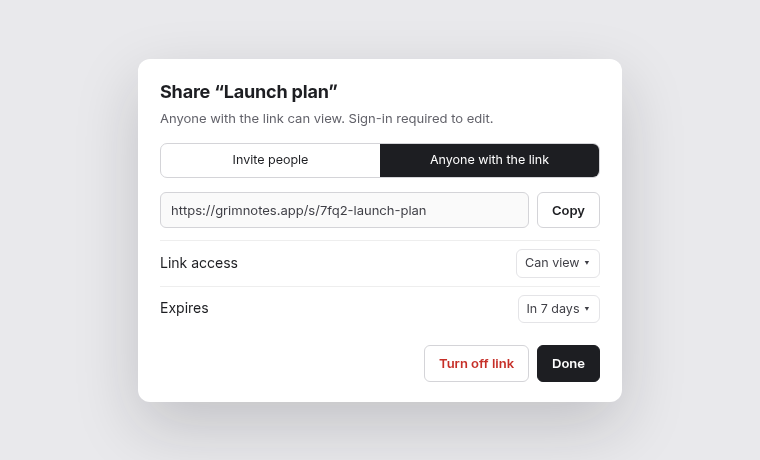
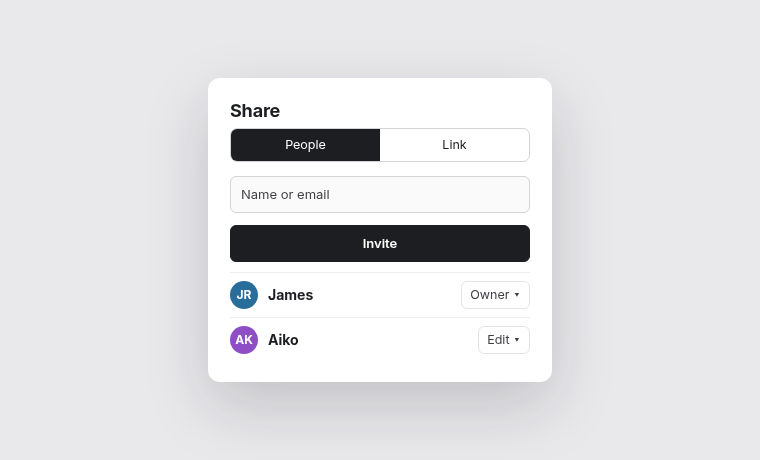

Share dialog: link sharing
Adds “Anyone with the link” to the share dialog, a share_links table on the server, and titles in the dialog header. 6 files, about 60 lines.
Should links expire after 7 days by default, or never? I picked 7 days (see links.ts).


Only the staging environment gets the new table for now.
Link tab works with keyboard only
Expired links show a clear message
Copy is right for agents (“act as you”)
The old per-note sharing doc is deleted; help centre links still point at it.